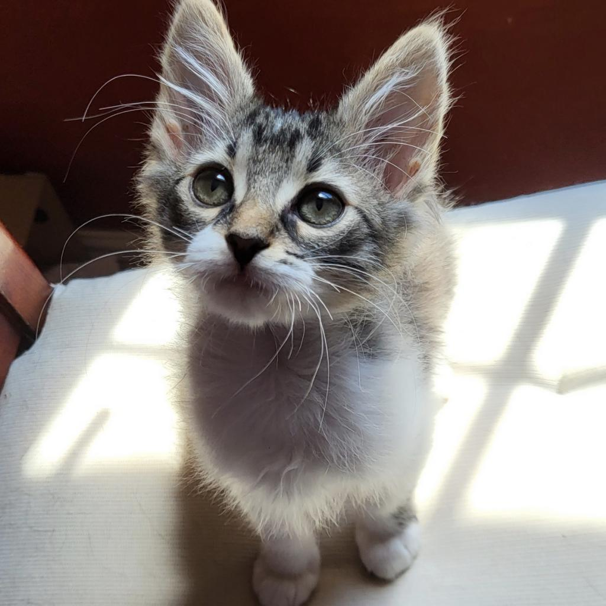

Welcome to Furtastic Adoption
We are dedicated to finding loving homes for cats in need. Our mission is to provide a safe and caring environment for our furry friends until they find a loving family.

Featured Cats

Fluffy
Fluffy is a playful and affectionate cat who loves cuddles and treats. She is looking for a home with a loving family who can give her the attention she deserves.

Whiskers
Whiskers is a gentle and shy cat who needs a patient and understanding home. Once he trusts you, he will be your most loyal companion.